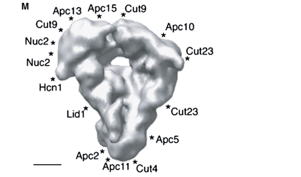

Apc2 is the cullin-family subunit of the Schizosaccharomyces pombe anaphase-promoting complex/cyclosome (APC/C), the 20S, 13-subunit cullin-RING E3 ubiquitin ligase (Apc1, Apc2, Nuc2, Lid1/Apc4, Apc5, Cut9, Cut23/Apc8, Apc10, Apc11, Hcn1, Apc13, Apc14 and Apc15) that triggers the metaphase-to-anaphase transition and exit from mitosis. It is the orthologue of budding yeast Apc2 and human ANAPC2. The 681-residue protein carries N-terminal cullin repeats and a C-terminal cullin-homology domain that anchors the RING-H2 subunit Apc11 to the complex; together the Apc2-Apc11 pair forms the catalytic module of the ligase, analogous to Cul1-Rbx1 of the SCF, which binds and positions the ubiquitin-charged E2 enzymes Ubc4 and Ubc11 (UbcP4) over substrates that are recognised through their D-box and KEN-box degrons by the coactivators Slp1 (Cdc20) in mitosis, Ste9/Srw1 (Cdh1) in G1 and Mfr1 in meiosis, together with Apc10/Doc1. Apc2 has no ubiquitin-thioester chemistry or substrate specificity of its own: the RING partner carries the E2-activating function, and a minimal Apc2-Apc11 module ubiquitinates substrates without degron selectivity. In the purified mitotic APC/C-Slp1 particle Apc2 is present at one copy and the Apc2-Apc11-Apc10 catalytic region maps to the lower side of the tricorn-shaped complex, next to the coactivator. Through the complex, Apc2 supports ubiquitination and proteasomal destruction of the securin Cut2 (releasing separase for sister-chromatid separation) and of the mitotic cyclin Cdc13 (lowering Cdc2 activity for mitotic exit and the G1 state). Fission yeast has a closed mitosis and the APC/C acts on nuclear substrates; YFP-tagged Apc2 is detected in both the nucleus and the cytosol. Whether the fission yeast complex builds K11- or K48-linked ubiquitin chains has not been determined, and the zinc-binding insert of metazoan ANAPC2 has not been demonstrated in the fungal protein.
| GO Term | Evidence | Action | Reason |
|---|---|---|---|
|
GO:0000151
ubiquitin ligase complex
|
IEA
GO_REF:0000117 |
ACCEPT |
Summary: ARBA machine-learning mapping to the generic ubiquitin ligase complex term, a parent of the anaphase-promoting complex (GO:0005680) that Apc2 is annotated to experimentally (PMID:12477395, PMID:15060174) and by PAINT.
Reason: Correct, if general. The APC/C is by definition a ubiquitin ligase complex (a conserved multisubunit ubiquitin ligase) and Apc2 is one of its 13 core subunits, so the electronic parent-term annotation is accurate and consistent with the specific GO:0005680 rows; it adds no new claim.
Supporting Evidence:
PMID:12477395
The anaphase-promoting complex (APC) is a conserved multisubunit ubiquitin ligase required for the degradation of key cell cycle regulators.
file:SCHPO/apc2/apc2-uniprot.txt
The APC/C is composed of at least 13 subunits: apc1, apc2,
|
|
GO:0003674
molecular_function
|
ND
GO_REF:0000015 |
MODIFY |
Summary: PomBase 'no data' placeholder recording that no molecular function had been assigned to Apc2 from fission yeast experiments. Apc2 is the cullin-family subunit that forms the APC/C catalytic centre with the RING subunit Apc11 (Zhang et al. 2010, PMID:20924356, writing on the S. pombe complex), and in the human and budding yeast orthologues the cullin-homology domain of Apc2 is the binding site that tethers Apc11 (and the E2 UbcH10) to the complex and positions the RING over substrates (PMID:11739784, PMID:10888670).
Reason: A molecular function can now be stated for this protein: the conserved cullin scaffold role, GO:0160072 ubiquitin ligase complex scaffold activity (the binding activity that brings together a ubiquitin ligase and its substrate adaptor so that they act in a coordinated way). The fission yeast evidence is complex-level (Apc2 and Apc11 form the catalytic centre; the Apc2-Apc11-Apc10 region maps next to the Slp1 coactivator in the S. pombe cryo-EM reconstruction), and the tethering mechanism is established in the orthologues (APC11 and UbcH10 bind the C-terminal cullin homology domain of APC2; Apc2 is not required for ubiquitin transfer in a minimal system but tethers and positions Apc11), so the replacement would be supported by ISS/IC rather than by a fission-yeast IDA. The term is the one carried by the canonical cullins CUL1-5 in GOA and adopted for human ANAPC2 and budding yeast Apc2 in this repository; Apc2 contributes to, but does not itself enable, ubiquitin protein ligase activity (GO:0061630), which belongs to the Apc11 RING.
Proposed replacements:
ubiquitin ligase complex scaffold activity
Supporting Evidence:
PMID:20924356
The catalytic centre of the APC/C is formed from the cullin and RING subunits Apc2 and Apc11, analogous to Cul1 and Rbx1, respectively, of the SCF cullin RING ligase.
PMID:20924356
In combination, Apc2 and Apc11 are competent to catalyse protein ubiquitylation, although lack substrate selectivity
PMID:15060174
Apc11 is anchored to the complex through Apc2, a subunit distantly related to cullins
PMID:11739784
Both APC11 and UbcH10 bind to the C-terminal cullin homology domain of APC2, whereas Ubc4 interacts with APC11 directly.
PMID:10888670
While Apc2p was not required to effect ubiquitin transfer in vitro, it may function in a cellular context to tether Apc11p to APC core proteins, and to properly position the Apc11p RING-H2 finger with respect to its substrates.
file:SCHPO/apc2/apc2-deep-research-falcon.md
Mapping placed the Apc2–Apc11–Apc10 catalytic region along the right/lower side of the complex, with Apc11 near the cavity lip and Slp1 near the lower horn-like region.
file:SCHPO/apc2/apc2-deep-research-falcon.md
Apc11 supplies the RING element that activates or positions the E2–ubiquitin conjugate; Apc2 supplies the cullin-like scaffold.
file:SCHPO/apc2/apc2-uniprot.txt
Belongs to the cullin family.
|
|
GO:0005634
nucleus
|
HDA
PMID:16823372 ORFeome cloning and global analysis of protein localization ... |
ACCEPT |
Summary: High-throughput localisation from the Matsuyama et al. 2006 ORFeome study, in which each S. pombe ORF was C-terminally tagged with YFP and imaged (4,431 proteins); Apc2-YFP was scored in the nucleus (and cytosol). The cached record is abstract-only, so the Apc2 image itself cannot be inspected.
Reason: Fission yeast undergoes a closed mitosis and the obligatory APC/C substrates Cut2/securin and Cdc13/cyclin B are nuclear at metaphase, so the nucleus is the compartment in which the Apc2-containing ligase performs its core function; the atlas observation agrees with the UniProt/ARBA nuclear mapping and with the biology. Accepted as the core site of activity, with the caveat that the evidence is a tagged-overexpression screen rather than an endogenous, cell-cycle-resolved study.
Supporting Evidence:
PMID:16823372
Next, we determined the localization of 4,431 proteins, corresponding to approximately 90% of the fission yeast proteome, by tagging each ORF with the yellow fluorescent protein.
PMID:9264466
We show here that the fission yeast gene products Cut9 and Nuc2 are the subunits of the 20S complex, the putative APC (anaphase promoting complex)/cyclosome which contains ubiquitin ligase activity required for cyclin and Cut2 destruction.
|
|
GO:0005634
nucleus
|
IEA
GO_REF:0000117 |
ACCEPT |
Summary: ARBA electronic nuclear-localisation prediction, consistent with the HDA nucleus row from the ORFeome YFP atlas (PMID:16823372) and with the nuclear substrates of the APC/C in the closed mitosis of fission yeast.
Reason: Correct and consistent with the direct HDA row; the electronic annotation adds no new claim but is accurate for the compartment in which the Apc2-containing APC/C ubiquitinates Cut2 and Cdc13.
Supporting Evidence:
PMID:16823372
Next, we determined the localization of 4,431 proteins, corresponding to approximately 90% of the fission yeast proteome, by tagging each ORF with the yellow fluorescent protein.
|
|
GO:0005680
anaphase-promoting complex
|
IBA
GO_REF:0000033 |
ACCEPT |
Summary: PAINT IBA from ancestral node PTN000231994 of the ANAPC2 family (PTHR45957), with experimental descendants in human ANAPC2, fly, budding yeast Apc2 and fission yeast apc2 itself. APC/C membership is the defining, ancestral property of this cullin-family lineage.
Reason: Apc2 is a constitutive core subunit of the 13-subunit fission yeast APC/C, recovered by mass spectrometry from Lid1-TAP, Apc13-TAP and Cut9-TAP purifications and present at one copy per particle in the mitotic APC/C-Slp1 complex. The IBA is a sound phylogenetic judgment; PomBase:SPBP23A10.04 (apc2 itself) appearing in the WITH/FROM list is expected, because its own IDA evidence was one of the descendant annotations used to place the IBD node.
Supporting Evidence:
PMID:12477395
Our data increase the total number of identified APC subunits to 13 in both yeasts and indicate that previous approaches were biased against the identification of small subunits.
file:SCHPO/apc2/apc2-deep-research-falcon.md
Apc2 yielded 19 unique tryptic peptides in a Lid1-TAP preparation and 24 in an independent Apc13-TAP preparation.
file:SCHPO/apc2/apc2-deep-research-falcon.md
differently tagged Apc2 molecules did not self-coimmunoprecipitate
|
|
GO:0005680
anaphase-promoting complex
|
IDA
PMID:12477395 Proteomics analysis identifies new components of the fission... |
ACCEPT |
Summary: Yoon et al. 2002 tandem-affinity purified the S. pombe APC/C and analysed it by DALPC mass spectrometry, raising the subunit count to 13; Apc2 (SPBP23A10.04) was recovered with 19 and 24 unique peptides from Lid1-TAP and Apc13-TAP preparations. This is the founding identification of fission yeast Apc2 as an APC/C subunit and the source of the UniProt SUBUNIT statement.
Reason: Direct biochemical evidence for complex membership in the gene's own organism; the cached record is abstract-only, but the abstract states the purification approach and the 13-subunit result, and the deep research reports the Apc2 peptide counts. Core.
Supporting Evidence:
PMID:12477395
Here, we have applied a tandem affinity purification approach coupled with direct analysis of the purified complexes by mass spectrometry (DALPC) to reveal additional subunits of both the S. pombe and S. cerevisiae APCs.
file:SCHPO/apc2/apc2-deep-research-falcon.md
Apc2 yielded 19 unique tryptic peptides in a Lid1-TAP preparation and 24 in an independent Apc13-TAP preparation.
file:SCHPO/apc2/apc2-uniprot.txt
The APC/C is composed of at least 13 subunits: apc1, apc2,
|
|
GO:0005680
anaphase-promoting complex
|
IDA
PMID:15060174 Swm1/Apc13 is an evolutionarily conserved subunit of the ana... |
ACCEPT |
Summary: Schwickart et al. 2004 purified TAP-tagged Cut9 and Apc13 from fission yeast and identified by mass spectrometry the set of known or predicted APC/C subunits (plus Apc13, Apc14 and Apc15) in both preparations; the full text is cached and the S. pombe purifications are described explicitly.
Reason: Independent co-purification of Apc2 with two different tagged APC/C subunits in the gene's own organism confirms constitutive membership of the complex. Core.
Supporting Evidence:
PMID:15060174
Mass spectrometric analysis of the Cut9-TAP purification identified 10 proteins known or predicted to be APC/C subunits
PMID:15060174
purification of a TAP-tagged version of Apc13 yielded the same set of APC/C subunits as Cut9-TAP
|
|
GO:0005680
anaphase-promoting complex
|
IPI
PMID:12477395 Proteomics analysis identifies new components of the fission... |
ACCEPT |
Summary: ComplexPortal-derived IPI for the fission yeast APC/C (CPX-763 and its Slp1, Srw1/Ste9 and Mfr1 coactivator variants), citing the Yoon et al. 2002 proteomic definition of the 13-subunit complex.
Reason: Duplicates the PomBase IDA from the same paper with a different evidence code; the underlying evidence (co-purification and mass-spectrometric identification of Apc2 in the TAP-purified complex) is sound. Core.
Supporting Evidence:
PMID:12477395
Our data increase the total number of identified APC subunits to 13 in both yeasts and indicate that previous approaches were biased against the identification of small subunits.
|
|
GO:0005829
cytosol
|
HDA
PMID:16823372 ORFeome cloning and global analysis of protein localization ... |
KEEP AS NON CORE |
Summary: Second localisation call from the Matsuyama et al. 2006 ORFeome YFP atlas, which scored Apc2-YFP in the cytosol as well as the nucleus. The APC/C is a soluble, roughly 1 MDa particle and a cytosolic pool is expected, but no fission yeast study links Apc2 to a cytosolic substrate or activity.
Reason: The observation is credible for a soluble complex and is not contradicted by any other data, so it is retained; but the core function of Apc2 (ubiquitination of the nuclear substrates Cut2 and Cdc13 during the closed mitosis of fission yeast) is executed in the nucleus, and the deep research explicitly cautions that no exclusive or activity-linked localisation for Apc2 itself is established by the species-specific evidence. Kept as a non-core location.
Supporting Evidence:
PMID:16823372
Next, we determined the localization of 4,431 proteins, corresponding to approximately 90% of the fission yeast proteome, by tagging each ORF with the yellow fluorescent protein.
|
|
GO:0006511
ubiquitin-dependent protein catabolic process
|
IEA
GO_REF:0000117 |
ACCEPT |
Summary: ARBA electronic mapping to the general ubiquitin-dependent proteolysis term; the specific descendants anaphase-promoting complex-dependent catabolic process (GO:0031145) and proteasome-mediated ubiquitin-dependent protein catabolic process (GO:0043161) are annotated from the literature.
Reason: Correct but general. The Apc2-containing APC/C is a ubiquitin ligase whose activity is required for the destruction of cyclin and Cut2, so the parent-term inference is accurate; it is subsumed by the more specific GO:0031145 row and adds no independent claim.
Supporting Evidence:
PMID:9264466
We show here that the fission yeast gene products Cut9 and Nuc2 are the subunits of the 20S complex, the putative APC (anaphase promoting complex)/cyclosome which contains ubiquitin ligase activity required for cyclin and Cut2 destruction.
PMID:12477395
The anaphase-promoting complex (APC) is a conserved multisubunit ubiquitin ligase required for the degradation of key cell cycle regulators.
|
|
GO:0007091
metaphase/anaphase transition of mitotic cell cycle
|
IBA
GO_REF:0000033 |
ACCEPT |
Summary: PAINT IBA from node PTN000231994, seeded by the budding yeast APC2 genetic evidence (rsi1/apc2 ts mutants arrest in metaphase and are rescued by deleting the securin PDS1). APC/C-Cdc20-driven destruction of securin is the ancestral trigger of the metaphase/anaphase transition across eukaryotes, and in fission yeast the 20S APC/cyclosome supplies the ligase activity required for Cut2/securin and cyclin destruction.
Reason: Apc2 forms the catalytic centre of the ligase (with Apc11) that ubiquitinates Cut2/securin under Slp1/Cdc20 control, which is precisely the process the term defines; the fission yeast complex is placed by cryo-EM with Slp1 adjacent to the Apc2-Apc11-Apc10 catalytic region. The IBA correctly reflects a conserved, ancestral function and there is no evidence of divergence in this lineage. Core.
Supporting Evidence:
PMID:9264466
We show here that the fission yeast gene products Cut9 and Nuc2 are the subunits of the 20S complex, the putative APC (anaphase promoting complex)/cyclosome which contains ubiquitin ligase activity required for cyclin and Cut2 destruction.
PMID:20924356
The catalytic centre of the APC/C is formed from the cullin and RING subunits Apc2 and Apc11, analogous to Cul1 and Rbx1, respectively, of the SCF cullin RING ligase.
file:SCHPO/apc2/apc2-deep-research-falcon.md
Securin destruction activates separase and sister-chromatid separation; cyclin-B destruction lowers Cdk activity and permits mitotic exit.
|
|
GO:0031145
anaphase-promoting complex-dependent catabolic process
|
NAS
PMID:12477395 Proteomics analysis identifies new components of the fission... |
ACCEPT |
Summary: ComplexPortal NAS assigned to every subunit of the fission yeast APC/C (CPX-763 and coactivator variants), citing the Yoon et al. 2002 proteomic definition of the complex. The process (ubiquitination by the APC/C followed by proteasomal destruction of securin and B-type cyclins) is established for the fission yeast 20S complex and for purified S. pombe APC/C used in in vitro ubiquitination assays.
Reason: GO:0031145 is the most precise process term for what the Apc2-containing ligase does, and Apc2 does the work as the cullin scaffold of the catalytic module rather than merely being required for it. The NAS code reflects a complex-level assignment, but the assertion is correct and is grounded experimentally on the fission yeast complex. Core.
Supporting Evidence:
PMID:9264466
We show here that the fission yeast gene products Cut9 and Nuc2 are the subunits of the 20S complex, the putative APC (anaphase promoting complex)/cyclosome which contains ubiquitin ligase activity required for cyclin and Cut2 destruction.
PMID:15060174
The anaphase-promoting complex (APC/C) is a large ubiquitin-protein ligase which controls progression through anaphase by triggering the degradation of cell cycle regulators such as securin and B-type cyclins.
file:SCHPO/apc2/apc2-deep-research-falcon.md
In fission yeast, Ubc4 and Ubc11 contribute to different aspects of cyclin-B ubiquitylation.
|
|
GO:0043161
proteasome-mediated ubiquitin-dependent protein catabolic process
|
IC
PMID:12477395 Proteomics analysis identifies new components of the fission... |
ACCEPT |
Summary: PomBase curator inference from APC/C membership (GO:0005680, PMID:12477395) to the general process of proteasome-mediated, ubiquitin-dependent proteolysis; a parent of the ComplexPortal GO:0031145 row.
Reason: The inference is sound - the APC/C is a ubiquitin ligase whose products are degraded by the 26S proteasome, and Apc2 is one of its two catalytic-module subunits - and the term is accurate though less specific than GO:0031145. Both rows describe the same core activity.
Supporting Evidence:
PMID:12477395
The anaphase-promoting complex (APC) is a conserved multisubunit ubiquitin ligase required for the degradation of key cell cycle regulators.
PMID:9264466
We show here that the fission yeast gene products Cut9 and Nuc2 are the subunits of the 20S complex, the putative APC (anaphase promoting complex)/cyclosome which contains ubiquitin ligase activity required for cyclin and Cut2 destruction.
|
|
GO:0070979
protein K11-linked ubiquitination
|
IBA
GO_REF:0000033 |
MODIFY |
Summary: PAINT IBA from node PTN000231994 whose only experimental donor for this term is human ANAPC2 (UniProtKB:Q9UJX6). K11-linked chain assembly by the human APC/C depends on the chain-elongating E2 UBE2S working after UBE2C/UbcH10. The characterised E2s of the fission yeast APC/C are Ubc4 and Ubc11 (the UbcH10/UBE2C orthologue); no UBE2S-type elongating E2 has been described for the S. pombe complex, and the linkage of the chains it builds has not been determined. In budding yeast, whose APC/C uses Ubc4 and Ubc1, the chains are K48-linked.
Reason: The IBD placement propagates a metazoan, UBE2S-dependent linkage specificity to the whole ANAPC2 family. The lineage-independent claim that is actually supported for fission yeast is that the Apc2-containing APC/C assembles polyubiquitin chains that target Cut2/securin and Cdc13/cyclin B to the proteasome (Ubc4- and Ubc11-dependent cyclin ubiquitylation by purified S. pombe APC/C). Because the linkage type in S. pombe is undetermined (and the closest characterised fungal system, budding yeast, makes K48 rather than K11 chains), the row should be re-expressed with the linkage-agnostic term protein polyubiquitination (GO:0000209), and the K11 IBD should be re-placed at the node where UBE2S-dependent chain elongation arose.
Propagation Review
Root cause:
PROPAGATION BAD
Failure modes:
LINEAGE OR TAXON MISMATCH
GRANULARITY MISMATCH
Sources checked:
PANTHER:PTN000231994
SUPPORTS SOURCE BUT NOT TARGET
IBD node in PTHR45957 carrying GO:0070979 on the strength of human ANAPC2 K11 evidence; K11 specificity depends on the elongating E2 UBE2S, which has not been described for the fission yeast APC/C, so the node is placed too deep for this term.
UniProtKB:Q9UJX6
· ANAPC2
SUPPORTS SOURCE BUT NOT TARGET
Human ANAPC2 has direct IDA evidence for K11-linked chains built by UBE2C/UBE2S; the fission yeast APC/C uses Ubc4 and Ubc11 and its chain linkage is undetermined.
Proposed replacements:
protein polyubiquitination
Supporting Evidence:
PMID:19822757
The cooperation between Ube2S and UbcH10 is reminiscent of yeast APC/C, which uses a chain-initiating E2, Ubc4, and a chain-elongating E2, Ubc1
PMID:19822757
However, Ubc4 and Ubc1 function sequentially to assemble K48-linked ubiquitin chains, whereas human UbcH10 and Ube2S most likely bind APC/C at the same time.
file:SCHPO/apc2/apc2-deep-research-falcon.md
In fission yeast, Ubc4 and Ubc11 contribute to different aspects of cyclin-B ubiquitylation.
|
Q: Which ubiquitin-chain linkages does the fission yeast APC/C build on Cut2 and Cdc13 with Ubc4 and Ubc11 - K48-linked chains as in budding yeast, K11-linked chains as in the UBE2S-dependent human system, or mixed chains - and should the PAINT K11 IBD for the ANAPC2 family be re-placed at a metazoan node?
Q: Does deletion or conditional inactivation of fission yeast apc2 remove Apc11 and Apc10 from the purified complex, as apc2 delta does in budding yeast, i.e. is the cullin tethering function that underlies the proposed ubiquitin ligase complex scaffold activity conserved in S. pombe?
Q: Is the zinc-binding module found in human APC2 (absent from budding yeast Apc2) present in fission yeast Apc2, and does it contribute to complex stability?
Experiment: Build a conditional (auxin-degron or ts) apc2 allele in a Lid1-TAP or Cut9-TAP background, purify the complex after Apc2 depletion, score retention of Apc11, Apc10 and Slp1 by mass spectrometry and immunoblot, and assay ubiquitination of Cut2 and Cdc13 in vitro with recombinant Uba1, Ubc4 and Ubc11.
Hypothesis: Fission yeast Apc2 independently tethers Apc11 and Apc10 to the APC/C core, and loss of Apc2 abolishes ligase activity of the purified complex.
Type: conditional depletion with TAP purification and in vitro ubiquitination
Experiment: Reconstitute ubiquitination of Cut2 and Cdc13 with purified S. pombe APC/C, Slp1, Uba1, Ubc4 and Ubc11 using wild-type and lysine-to-arginine ubiquitin mutants, and quantify linkage types by ubiquitin-AQUA mass spectrometry; compare with chains on Cdc13 immunopurified from metaphase-arrested cells.
Hypothesis: The ubiquitin chains assembled on Cut2 and Cdc13 by the Apc2-containing fission yeast APC/C are predominantly K48-linked, with no substantial K11 component.
Type: in vitro reconstitution with quantitative ubiquitin linkage mass spectrometry
Experiment: Tag apc2 at its chromosomal locus with a fluorescent protein, confirm the fusion is functional, and image it live through the cell cycle alongside a spindle-pole-body and a nuclear-envelope marker, including in cells arrested at metaphase by the spindle assembly checkpoint.
Hypothesis: Endogenous Apc2 is predominantly nuclear during the closed mitosis of fission yeast, with a cytosolic pool in interphase.
Type: endogenous tagging and live-cell imaging
The research report should be a detailed narrative explaining the function, biological processes, and localization of the gene product. Citations should be given for all claims.
You should prioritize authoritative reviews and primary scientific literature when conducting research. You can supplement
this with annotations you find in gene/protein databases, but these can be outdated or inaccurate.
We are specifically interested in the primary function of the gene - for enzymes, what reaction is catalyzed, and what is the substrate specificity? For transporters, what is the substrate? For structural proteins or adapters, what is the broader structural role? For signaling molecules, what is the role in the pathway.
We are interested in where in or outside the cell the gene product carries out its function.
We are also interested in the signaling or biochemical pathways in which the gene functions. We are less interested in broad pleiotropic effects, except where these elucidate the precise role.
Include evidence where possible. We are interested in both experimental evidence as well as inference from structure, evolution, or bioinformatic analysis. Precise studies should be prioritized over high-throughput, where available.
The requested target is correctly identified as Apc2, the anaphase-promoting complex/cyclosome subunit 2 encoded by ORF SPBP23A10.04 in Schizosaccharomyces pombe. Genome homology originally identified SPBP23A10.04 as the fission-yeast Apc2 ortholog, and species-specific affinity-purification mass spectrometry recovered the approximately 81-kDa protein with 19 and 24 unique peptides in two independent APC/C preparations. This firmly distinguishes Q874R3 from unrelated proteins called “APC2” in other organisms or from the adenomatous-polyposis-coli gene nomenclature used in metazoans. (yoon2002proteomicsanalysisidentifies pages 2-4, yoon2002proteomicsanalysisidentifies pages 1-2)
Apc2 is not a stand-alone enzyme or substrate receptor. It is the cullin-family structural component of the APC/C catalytic module. Together with the RING-finger subunit Apc11, it organizes recruitment and positioning of ubiquitin-loaded E2 enzymes so that the complete APC/C can ubiquitylate cell-cycle regulators. Substrate selection and timing are supplied principally by the holoenzyme, its coactivators—Slp1/Cdc20 in mitosis and Ste9/Cdh1 in G1—and degron-bearing substrates, rather than by Apc2 itself. (ors2009thetranscriptionfactor pages 1-2, ohi2007structuralorganizationof pages 1-2, tang2001apc2cullinprotein pages 1-2)
The principal physiological outputs are APC/C-dependent ubiquitylation and proteasomal destruction of securin and mitotic cyclin B. Securin destruction activates separase and sister-chromatid separation; cyclin-B destruction lowers Cdk activity and permits mitotic exit. Thus, the most defensible primary annotation is: a nonenzymatic cullin-like scaffold of the APC/C RING E3 ubiquitin ligase catalytic core, required for regulated proteolysis during the metaphase–anaphase transition and mitotic exit. (ors2009thetranscriptionfactor pages 1-2, ohi2007structuralorganizationof pages 1-2, tang2001apc2cullinprotein pages 1-2)
The strongest direct identity evidence is the recovery of SPBP23A10.04/Apc2 from purified S. pombe APC/C. Apc2 yielded 19 unique tryptic peptides in a Lid1-TAP preparation and 24 in an independent Apc13-TAP preparation. These results verify both the protein assignment and physical membership in the fission-yeast APC/C. [Yoon et al., Current Biology, 10 December 2002, DOI/URL: https://doi.org/10.1016/S0960-9822(02)01331-3]. (yoon2002proteomicsanalysisidentifies pages 2-4)
The literature identifies Apc2 as a cullin-repeat/cullin-domain protein, consistent with the supplied InterPro annotations ANAPC2, ANAPC2_C, Cullin-like_AB, Cullin_homology, and Cullin_homology_sf. The accompanying RING-finger protein is Apc11. This cullin–RING arrangement is analogous in general organization—not necessarily in every regulatory detail—to the cullin–RING catalytic architecture of SCF-family E3 ligases. (ors2009thetranscriptionfactor pages 1-2, ohi2007structuralorganizationof pages 1-2, tang2001apc2cullinprotein pages 1-2)
Accordingly, no conflicting family or domain evidence was found. Literature concerning plant, animal, budding-yeast, or parasite APC2 proteins was used only for explicitly labeled comparative inference and not as direct evidence about Q874R3.
| Annotation claim | Evidence type | Species | Key finding | Confidence / interpretation |
|---|---|---|---|---|
| Identity: Apc2 = SPBP23A10.04; ~81 kDa | Genome homology plus APC/C affinity purification–mass spectrometry | S. pombe | SPBP23A10.04 was identified as the Apc2 homolog; Apc2 was recovered from Lid1-TAP and Apc13-TAP APC/C preparations with 19 and 24 unique tryptic peptides, respectively. (yoon2002proteomicsanalysisidentifies pages 2-4, yoon2002proteomicsanalysisidentifies pages 1-2) | High—direct species-specific identity and complex-membership evidence. The supplied UniProt accession Q874R3 is consistent with this target; this is not a same-symbol protein from another organism. |
| One-copy core APC/C subunit | Differential epitope tagging, co-immunoprecipitation, stoichiometric analysis, and cryo-EM sample composition | S. pombe | Apc2 did not self-co-immunoprecipitate in double-tagged strains, indicating one Apc2 copy per APC/C particle; all 13 core subunits were detected in purified mitotic APC/C. (ohi2007structuralorganizationof pages 4-6, ohi2007structuralorganizationof pages 1-2) | High—direct species-specific biochemical evidence. |
| Cullin-domain component paired with Apc11 in the catalytic module | Sequence/domain assignment and biochemical/structural organization | S. pombe plus conserved APC/C evidence | Apc2 is the cullin-repeat/domain subunit; Apc2, the RING-finger protein Apc11, and Apc10 form the catalytic-region subcomplex. The Apc2–Apc11 pair supplies ligase capacity, while full substrate specificity requires the larger APC/C and activators. (ors2009thetranscriptionfactor pages 1-2, ohi2007structuralorganizationof pages 1-2, ohi2007structuralorganizationof pages 10-12) | High for cullin-family identity and APC/C structural role; moderate for molecular details inferred from conserved systems. |
| Position on the right/lower catalytic side near Apc11 | Single-particle cryo-EM, antibody labeling, mutant difference mapping | S. pombe | The 27 Å APC/C–Slp1 map places the Apc2–Apc11–Apc10 catalytic region along the complex’s right/lower side; Apc11 and Slp1 lie near the cavity lip/horn. The particle measures about 19 × 17 × 15 nm. (ohi2007structuralorganizationof pages 9-10, ohi2007structuralorganizationof pages 10-12, ohi2007structuralorganizationof pages 4-6, ohi2007structuralorganizationof media 0cf42430) | Moderate-to-high—direct species-specific localization at subunit-region, not residue/atomic, resolution. |
| Pathway output: securin and cyclin-B ubiquitylation/degradation | Functional assays of purified intact APC/C and established cell-cycle pathway evidence | S. pombe | Purified APC/C showed E1-, E2-, ATP-dependent ubiquitylation activity; intact APC/C targets securin and mitotic cyclin B, thereby enabling sister-chromatid separation and mitotic exit. Two fission-yeast E2s, Ubc4 and Ubc11, support different aspects of cyclin-B ubiquitylation. (yoon2002proteomicsanalysisidentifies pages 2-4, ors2009thetranscriptionfactor pages 1-2, ohi2007structuralorganizationof pages 2-4, ohi2007structuralorganizationof pages 1-2) | High for the intact APC/C pathway; not evidence that isolated Apc2 recognizes substrates or catalyzes a stand-alone reaction. |
| APC2/APC11 is a minimal ubiquitin-ligase module | Recombinant reconstitution, binding assays, truncation analysis, and ubiquitylation assays | Human proteins / Xenopus extracts | Recombinant APC2–APC11 ubiquitylated securin and cyclin B1 with Ubc4 or UbcH10 but lacked degron specificity. APC11 and UbcH10 bound the APC2 C-terminal cullin-homology region; APC2 residues 549–822 were sufficient for these interactions. (tang2001apc2cullinprotein pages 1-2, tang2001apc2cullinprotein pages 6-7) | Strong conserved-mechanism inference, not direct Q874R3 biochemistry. Supports Apc2 as a nonenzymatic cullin scaffold positioning Apc11/E2 rather than a substrate-selective enzyme. |
| APC2 zinc-binding module reported in 2024 | High-resolution cryo-EM, PIXE metal analysis, mutagenesis, and stability assays | Human | Human APC2 has a zinc module coordinated by Cys221/Cys224/Cys231/Cys233; 2.9 Å and 3.2 Å structures and metal/stability experiments support a structural-stabilization role. The module was absent from budding-yeast APC2 in the reported comparison. (barford2023newstructuralfeatures pages 5-7, hofler2024newstructuralfeatures pages 17-19, hofler2024cryoemstructuresof pages 1-3) | Not established in S. pombe. It must not be assigned to Q874R3 without sequence conservation and species-specific structural or biochemical validation. |
Table: Evidence supporting functional annotation of fission-yeast Apc2 (Q874R3), separated from conserved mechanistic inference and human-specific findings. Confidence reflects both experimental directness and species relevance.
Apc2 serves as the cullin-like platform of the APC/C catalytic region. Its role is to organize Apc11 and the E2–ubiquitin machinery relative to substrates recruited by other APC/C components. It should therefore be annotated as a structural/catalytic-core adaptor rather than as an enzyme with an independently measurable substrate-binding specificity. (ohi2007structuralorganizationof pages 1-2, ohi2007structuralorganizationof pages 10-12)
In purified mitotic S. pombe APC/C, Apc2 occurs at approximately one copy per particle: unlike the duplicated TPR proteins Cut9, Cut23, and Nuc2, differently tagged Apc2 molecules did not self-coimmunoprecipitate. The inferred holoenzyme contained two copies of each of those three TPR proteins but one copy of each remaining tested subunit, with a predicted mass of 986 kDa including Slp1, close to the STEM estimate of 890 ± 133 kDa. [Ohi et al., Molecular Cell, 14 December 2007, DOI/URL: https://doi.org/10.1016/j.molcel.2007.10.003]. (ohi2007structuralorganizationof pages 4-6)
As part of the holoenzyme, Apc2 supports the RING-E3 reaction:
E2–ubiquitin + substrate → E2 + ubiquitylated substrate, followed through repeated cycles by formation of proteasome-directed ubiquitin chains.
Apc2 itself is not known to form a catalytic covalent intermediate. Apc11 supplies the RING element that activates or positions the E2–ubiquitin conjugate; Apc2 supplies the cullin-like scaffold. In fission yeast, Ubc4 and Ubc11 contribute to different aspects of cyclin-B ubiquitylation. Purified S. pombe APC/C displayed E1-, E2-, ATP-dependent ubiquitylation activity, establishing activity of the intact complex but not of isolated Q874R3. (yoon2002proteomicsanalysisidentifies pages 2-4, ohi2007structuralorganizationof pages 2-4, ohi2007structuralorganizationof pages 1-2)
Reconstitution with human, rather than fission-yeast, proteins showed that an APC2–APC11 heterodimer can ubiquitylate securin and cyclin B1 with Ubc4 or UbcH10. However, it also modified destruction-box-deleted substrates, demonstrating that the minimal module lacks physiological degron specificity. APC11 and UbcH10 associated with the APC2 C-terminal cullin-homology region; an APC2 fragment spanning residues 549–822 was sufficient for these interactions in that human system. [Tang et al., Molecular Biology of the Cell, December 2001, DOI/URL: https://doi.org/10.1091/mbc.12.12.3839]. (tang2001apc2cullinprotein pages 1-2, tang2001apc2cullinprotein pages 6-7)
This is strong support for the conserved mechanistic interpretation of Q874R3, but the human residue numbers and precise interfaces must not be transferred directly to S. pombe without alignment or species-specific structural validation.
Apc2 has no established autonomous substrate specificity. Physiological specificity arises from the assembled APC/C and coactivators recognizing degrons such as destruction boxes and KEN boxes. Slp1/Cdc20 is the mitotic coactivator in S. pombe, whereas Ste9 is the Cdh1-related regulator important during G1 and mating-related arrest. (ohi2007structuralorganizationof pages 1-2)
The key physiological substrate classes are:
These are substrates of APC/C–coactivator assemblies, not substrates recognized by isolated Apc2. (ors2009thetranscriptionfactor pages 1-2, ohi2007structuralorganizationof pages 1-2, tang2001apc2cullinprotein pages 1-2)
Single-particle cryo-EM of active S. pombe APC/C–Slp1 produced a 27 Å reconstruction of an asymmetric, tricorn-shaped particle approximately 19 × 17 × 15 nm, with an 11.5 × 9.5 × 6.5 nm central cavity. The reconstructed complex was contoured to approximately 980 kDa. Mapping placed the Apc2–Apc11–Apc10 catalytic region along the right/lower side of the complex, with Apc11 near the cavity lip and Slp1 near the lower horn-like region. (ohi2007structuralorganizationof pages 4-6, ohi2007structuralorganizationof pages 9-10, ohi2007structuralorganizationof pages 10-12)
The mapped cryo-EM model directly shows the Apc2 C-terminal position adjacent to Apc11 in the lower catalytic region. Because the map is low resolution, it establishes regional placement, not an atomic Apc2 fold or residue-level interface. (ohi2007structuralorganizationof media 0cf42430)
Slp1 was localized independently by difference mapping and antibody labeling near the lower corner and Apc11. Its proximity is consistent with a geometry in which activator-bound substrate is presented to the Apc2–Apc11/E2 catalytic machinery. (ohi2007structuralorganizationof pages 7-9, ohi2007structuralorganizationof media 9891b18a)
The strongest available localization evidence concerns Apc2’s position inside the soluble macromolecular APC/C, not a comprehensive microscopy-derived cellular localization map for Q874R3. The purified mitotic complex contains Slp1 and is active during chromosome segregation; APC/C function therefore occurs in the intracellular mitotic compartment where it encounters spindle/checkpoint-associated regulators and nuclear cell-cycle substrates. Nevertheless, a precise statement such as “exclusively nuclear,” “kinetochore-localized,” or “spindle-localized” is not justified for Apc2 itself from the retrieved species-specific evidence.
The conservative annotation is therefore: intracellular APC/C component, functioning in the mitotic/nuclear cell-cycle environment; exact standalone Apc2 localization is insufficiently resolved.
Apc2 belongs to the ubiquitin–proteasome arm of cell-cycle control. The pathway can be summarized as follows:
The APC/C remains subject to spindle-checkpoint regulation through Slp1/Cdc20. Direct structural work found Slp1 near Apc11, while fission-yeast studies show that checkpoint proteins Mad2 and Mad3 stably interact with mitotic Cdc20–APC/C. This regulatory connection applies to the APC/C assembly; it does not imply that Apc2 is itself the checkpoint receptor. (ohi2007structuralorganizationof pages 7-9, ohi2007structuralorganizationof pages 1-2)
An additional fission-yeast regulatory observation is that Atf1 physically associates with APC/C and can stimulate APC/C-dependent cyclin-B and securin ubiquitylation in a cell-free system. This broadens regulation of the complex but does not change Apc2’s primary assignment as its cullin scaffold. [Ors et al., Journal of Biological Chemistry, 4 September 2009, DOI/URL: https://doi.org/10.1074/jbc.M109.018309]. (ors2009thetranscriptionfactor pages 1-2)
No 2023–2024 study retrieved here directly re-characterized S. pombe Q874R3. Consequently, the best direct evidence remains the older fission-yeast proteomic and structural literature. Recent high-resolution work nevertheless refines the broader APC2 mechanistic framework.
Höfler and colleagues reported human apo-APC/C and APC/C–CDH1–EMI1 structures at 3.2 Å and 2.9 Å, respectively. They resolved a previously unrecognized human APC2 zinc-binding module and experimentally confirmed zinc. Human residues Cys221, Cys224, Cys231, and Cys233 coordinate the ion, and mutational/stability experiments support a structural-stabilization role. [Höfler et al., Nature Communications, November 2024, DOI/URL: https://doi.org/10.1038/s41467-024-54398-5]. (barford2023newstructuralfeatures pages 5-7, hofler2024newstructuralfeatures pages 17-19, hofler2024cryoemstructuresof pages 1-3)
This is not presently an annotation for Q874R3. The reported conservation analysis was metazoan-focused, and the module was absent from budding-yeast APC2; no equivalent sequence, metal measurement, or structure was demonstrated for S. pombe. The appropriate conclusion is that a possible zinc-stabilized feature in fission-yeast Apc2 remains an open, testable hypothesis, not an established domain. (barford2023newstructuralfeatures pages 5-7, hofler2024cryoemstructuresof pages 1-3)
Recent APC/C research also emphasizes spatial regulation: a 2024 human-cell study found that APC/C and cyclin B1 interact primarily at the mitotic apparatus and that chromosome/nucleosome association accelerates cyclin-B1 degradation. This reinforces the concept that substrate encounter is organized by the holoenzyme and cellular context, but it must not be used to assign a specific localization mechanism to fission-yeast Apc2 without direct evidence. [Cirillo et al., EMBO Journal, August 2024, DOI/URL: https://doi.org/10.1038/s44318-024-00194-2].
Apc2/Q874R3 has no known direct clinical, industrial, or transporter-like application. Its practical value is primarily as:
These translational links concern conserved APC/C biology rather than a validated application of the fission-yeast protein itself. Core-subunit perturbation is experimentally more informative than relying solely on Cdc20/Cdh1 perturbation because the coactivators can have APC/C-independent activities, as emphasized by recent mammalian work. [Day et al., Frontiers in Molecular Neuroscience, June 2024, DOI/URL: https://doi.org/10.3389/fnmol.2024.1352782].
Apc2/Q874R3 is a one-copy, cullin-family core subunit of the S. pombe APC/C. It forms the structural platform of the Apc2–Apc11 catalytic region and enables E2-dependent ubiquitylation of cell-cycle regulators by the assembled complex. Through APC/C-mediated destruction of securin and mitotic cyclin B, it supports sister-chromatid separation and mitotic exit. (yoon2002proteomicsanalysisidentifies pages 2-4, ors2009thetranscriptionfactor pages 1-2, ohi2007structuralorganizationof pages 9-10, ohi2007structuralorganizationof pages 1-2)
The principal remaining needs are an endogenous fluorescent-localization analysis across the S. pombe cell cycle; conditional depletion or separation-of-function mutations of Q874R3; direct recombinant S. pombe Apc2–Apc11–E2 reconstitution; residue-level cryo-EM or AlphaFold-guided mutational validation; and explicit testing for conservation of the human APC2 zinc-binding module. These experiments would distinguish indispensable scaffolding contacts from regulatory or catalytic-interface contributions.
The literature and supplied UniProt identity are concordant: Q874R3 is the fission-yeast Apc2 cullin-like APC/C subunit encoded by SPBP23A10.04. Its primary function is architectural and catalytic-core organization, not autonomous substrate recognition. It positions the Apc11 RING/E2 machinery within APC/C so that coactivator-selected substrates—especially securin and cyclin B—can be ubiquitylated and destroyed at the correct cell-cycle stage. Direct S. pombe proteomics, stoichiometry, enzymology, and cryo-EM strongly support this annotation; finer atomic mechanisms derive mainly from conserved human systems and must remain explicitly labeled as inference.
References
(yoon2002proteomicsanalysisidentifies pages 2-4): Hyun-Joo Yoon, Anna Feoktistova, Benjamin A. Wolfe, Jennifer L. Jennings, Andrew J. Link, and Kathleen L. Gould. Proteomics analysis identifies new components of the fission and budding yeast anaphase-promoting complexes. Current Biology, 12:2048-2054, Dec 2002. URL: https://doi.org/10.1016/s0960-9822(02)01331-3, doi:10.1016/s0960-9822(02)01331-3. This article has 137 citations and is from a highest quality peer-reviewed journal.
(yoon2002proteomicsanalysisidentifies pages 1-2): Hyun-Joo Yoon, Anna Feoktistova, Benjamin A. Wolfe, Jennifer L. Jennings, Andrew J. Link, and Kathleen L. Gould. Proteomics analysis identifies new components of the fission and budding yeast anaphase-promoting complexes. Current Biology, 12:2048-2054, Dec 2002. URL: https://doi.org/10.1016/s0960-9822(02)01331-3, doi:10.1016/s0960-9822(02)01331-3. This article has 137 citations and is from a highest quality peer-reviewed journal.
(ors2009thetranscriptionfactor pages 1-2): Aslihan Ors, Margaret Grimaldi, Yuu Kimata, Caroline R.M. Wilkinson, Nic Jones, and Hiroyuki Yamano. The transcription factor atf1 binds and activates the apc/c ubiquitin ligase in fission yeast. Journal of Biological Chemistry, 284:23989-23994, Sep 2009. URL: https://doi.org/10.1074/jbc.m109.018309, doi:10.1074/jbc.m109.018309. This article has 30 citations and is from a domain leading peer-reviewed journal.
(ohi2007structuralorganizationof pages 1-2): Melanie D. Ohi, Anna Feoktistova, Liping Ren, Calvin Yip, Yifan Cheng, Jun-Song Chen, Hyun-Joo Yoon, Joseph S. Wall, Zhong Huang, Pawel A. Penczek, Kathleen L. Gould, and Thomas Walz. Structural organization of the anaphase-promoting complex bound to the mitotic activator slp1. Molecular cell, 28 5:871-85, Dec 2007. URL: https://doi.org/10.1016/j.molcel.2007.10.003, doi:10.1016/j.molcel.2007.10.003. This article has 64 citations and is from a highest quality peer-reviewed journal.
(tang2001apc2cullinprotein pages 1-2): Zhanyun Tang, Bing Li, Rajnish Bharadwaj, Haizhen Zhu, Engin Özkan, Kevin Hakala, Johann Deisenhofer, and Hongtao Yu. Apc2 cullin protein and apc11 ring protein comprise the minimal ubiquitin ligase module of the anaphase-promoting complex. Molecular biology of the cell, 12 12:3839-51, Dec 2001. URL: https://doi.org/10.1091/mbc.12.12.3839, doi:10.1091/mbc.12.12.3839. This article has 253 citations and is from a domain leading peer-reviewed journal.
(ohi2007structuralorganizationof pages 4-6): Melanie D. Ohi, Anna Feoktistova, Liping Ren, Calvin Yip, Yifan Cheng, Jun-Song Chen, Hyun-Joo Yoon, Joseph S. Wall, Zhong Huang, Pawel A. Penczek, Kathleen L. Gould, and Thomas Walz. Structural organization of the anaphase-promoting complex bound to the mitotic activator slp1. Molecular cell, 28 5:871-85, Dec 2007. URL: https://doi.org/10.1016/j.molcel.2007.10.003, doi:10.1016/j.molcel.2007.10.003. This article has 64 citations and is from a highest quality peer-reviewed journal.
(ohi2007structuralorganizationof pages 10-12): Melanie D. Ohi, Anna Feoktistova, Liping Ren, Calvin Yip, Yifan Cheng, Jun-Song Chen, Hyun-Joo Yoon, Joseph S. Wall, Zhong Huang, Pawel A. Penczek, Kathleen L. Gould, and Thomas Walz. Structural organization of the anaphase-promoting complex bound to the mitotic activator slp1. Molecular cell, 28 5:871-85, Dec 2007. URL: https://doi.org/10.1016/j.molcel.2007.10.003, doi:10.1016/j.molcel.2007.10.003. This article has 64 citations and is from a highest quality peer-reviewed journal.
(ohi2007structuralorganizationof pages 9-10): Melanie D. Ohi, Anna Feoktistova, Liping Ren, Calvin Yip, Yifan Cheng, Jun-Song Chen, Hyun-Joo Yoon, Joseph S. Wall, Zhong Huang, Pawel A. Penczek, Kathleen L. Gould, and Thomas Walz. Structural organization of the anaphase-promoting complex bound to the mitotic activator slp1. Molecular cell, 28 5:871-85, Dec 2007. URL: https://doi.org/10.1016/j.molcel.2007.10.003, doi:10.1016/j.molcel.2007.10.003. This article has 64 citations and is from a highest quality peer-reviewed journal.
(ohi2007structuralorganizationof media 0cf42430): Melanie D. Ohi, Anna Feoktistova, Liping Ren, Calvin Yip, Yifan Cheng, Jun-Song Chen, Hyun-Joo Yoon, Joseph S. Wall, Zhong Huang, Pawel A. Penczek, Kathleen L. Gould, and Thomas Walz. Structural organization of the anaphase-promoting complex bound to the mitotic activator slp1. Molecular cell, 28 5:871-85, Dec 2007. URL: https://doi.org/10.1016/j.molcel.2007.10.003, doi:10.1016/j.molcel.2007.10.003. This article has 64 citations and is from a highest quality peer-reviewed journal.
(ohi2007structuralorganizationof pages 2-4): Melanie D. Ohi, Anna Feoktistova, Liping Ren, Calvin Yip, Yifan Cheng, Jun-Song Chen, Hyun-Joo Yoon, Joseph S. Wall, Zhong Huang, Pawel A. Penczek, Kathleen L. Gould, and Thomas Walz. Structural organization of the anaphase-promoting complex bound to the mitotic activator slp1. Molecular cell, 28 5:871-85, Dec 2007. URL: https://doi.org/10.1016/j.molcel.2007.10.003, doi:10.1016/j.molcel.2007.10.003. This article has 64 citations and is from a highest quality peer-reviewed journal.
(tang2001apc2cullinprotein pages 6-7): Zhanyun Tang, Bing Li, Rajnish Bharadwaj, Haizhen Zhu, Engin Özkan, Kevin Hakala, Johann Deisenhofer, and Hongtao Yu. Apc2 cullin protein and apc11 ring protein comprise the minimal ubiquitin ligase module of the anaphase-promoting complex. Molecular biology of the cell, 12 12:3839-51, Dec 2001. URL: https://doi.org/10.1091/mbc.12.12.3839, doi:10.1091/mbc.12.12.3839. This article has 253 citations and is from a domain leading peer-reviewed journal.
(barford2023newstructuralfeatures pages 5-7): David Barford, Anna Höfler, Jun Yu, Jing Yan, Ziguo Zhang, Leifu Chang, Geoffrey Grime, Elspeth Garman, and Andreas Boland. New structural features of the apc/c revealed by high resolution cryo-em structures of apo-apc/c and the apc/ccdh1:emi1 complex. Unknown journal, Sep 2023. URL: https://doi.org/10.21203/rs.3.rs-3312866/v1, doi:10.21203/rs.3.rs-3312866/v1.
(hofler2024newstructuralfeatures pages 17-19): Anna Höfler, Jun Yu, Jing Yang, Ziguo Zhang, L. Chang, Stephen H. McLaughlin, G. W. Grime, E. Garman, Andreas Boland, and David Barford. New structural features of the apc/c from high-resolution cryo-em structures of apo-apc/c and apc/ccdh1:emi1 complexes. bioRxiv, Nov 2024. URL: https://doi.org/10.1101/2023.08.31.555674, doi:10.1101/2023.08.31.555674. This article has 1 citations.
(hofler2024cryoemstructuresof pages 1-3): Anna Höfler, Jun Yu, Jing Yang, Ziguo Zhang, Leifu Chang, Stephen H. McLaughlin, Geoffrey W. Grime, Elspeth F. Garman, Andreas Boland, and David Barford. Cryo-em structures of apo-apc/c and apc/ccdh1:emi1 complexes provide insights into apc/c regulation. Nature Communications, Nov 2024. URL: https://doi.org/10.1038/s41467-024-54398-5, doi:10.1038/s41467-024-54398-5. This article has 13 citations and is from a highest quality peer-reviewed journal.
(ohi2007structuralorganizationof pages 7-9): Melanie D. Ohi, Anna Feoktistova, Liping Ren, Calvin Yip, Yifan Cheng, Jun-Song Chen, Hyun-Joo Yoon, Joseph S. Wall, Zhong Huang, Pawel A. Penczek, Kathleen L. Gould, and Thomas Walz. Structural organization of the anaphase-promoting complex bound to the mitotic activator slp1. Molecular cell, 28 5:871-85, Dec 2007. URL: https://doi.org/10.1016/j.molcel.2007.10.003, doi:10.1016/j.molcel.2007.10.003. This article has 64 citations and is from a highest quality peer-reviewed journal.
(ohi2007structuralorganizationof media 9891b18a): Melanie D. Ohi, Anna Feoktistova, Liping Ren, Calvin Yip, Yifan Cheng, Jun-Song Chen, Hyun-Joo Yoon, Joseph S. Wall, Zhong Huang, Pawel A. Penczek, Kathleen L. Gould, and Thomas Walz. Structural organization of the anaphase-promoting complex bound to the mitotic activator slp1. Molecular cell, 28 5:871-85, Dec 2007. URL: https://doi.org/10.1016/j.molcel.2007.10.003, doi:10.1016/j.molcel.2007.10.003. This article has 64 citations and is from a highest quality peer-reviewed journal.

Fission yeast Apc2, the cullin-family subunit of the anaphase-promoting
complex/cyclosome (APC/C). Ortholog of S. cerevisiae Apc2 (Q12440) and human
ANAPC2 (Q9UJX6). Not to be confused with S. cerevisiae APC2, which has its own
completed review in genes/yeast/APC2/, nor with the metazoan adenomatous
polyposis coli paralog "APC2".
apc2-uniprot.txt (entry version 135, 681 aa; "Belongs to the cullin family";apc2-deep-research-falcon.md (Edison; 33 citations, mainly Yoon 2002, Ohi| term | evidence | action | note |
|---|---|---|---|
| GO:0000151 ubiquitin ligase complex | IEA ARBA | ACCEPT | correct parent of GO:0005680 |
| GO:0003674 molecular_function | ND | MODIFY -> GO:0160072 | MF is now assignable (cullin scaffold, ISS/IC) |
| GO:0005634 nucleus | HDA | ACCEPT | closed mitosis, nuclear substrates |
| GO:0005634 nucleus | IEA ARBA | ACCEPT | |
| GO:0005680 APC/C | IBA | ACCEPT | target in own WITH/FROM is expected |
| GO:0005680 APC/C | IDA PMID:12477395 | ACCEPT | |
| GO:0005680 APC/C | IDA PMID:15060174 | ACCEPT | Cut9-TAP / Apc13-TAP |
| GO:0005680 APC/C | IPI PMID:12477395 (ComplexPortal) | ACCEPT | |
| GO:0005829 cytosol | HDA | KEEP_AS_NON_CORE | |
| GO:0006511 Ub-dependent catabolic process | IEA ARBA | ACCEPT | general but correct |
| GO:0007091 metaphase/anaphase transition | IBA | ACCEPT | core |
| GO:0031145 APC/C-dependent catabolic process | NAS (ComplexPortal) | ACCEPT | most precise process term |
| GO:0043161 proteasome-mediated Ub-dependent catabolic process | IC | ACCEPT | |
| GO:0070979 protein K11-linked ubiquitination | IBA | MODIFY -> GO:0000209 | K11 specificity is UBE2S-dependent and metazoan; linkage in S. pombe not determined |
No NEW process terms proposed: every process the Apc2-containing ligase executes
(GO:0031145, GO:0007091) is already annotated, and GO:0010458 exit from mitosis
would be a complex-level inference that PomBase has not made for the core
subunits (checked against nuc2, which also lacks it).
id: Q874R3
gene_symbol: apc2
product_type: PROTEIN
status: COMPLETE
taxon:
id: NCBITaxon:284812
label: Schizosaccharomyces pombe (strain 972 / ATCC 24843)
description: 'Apc2 is the cullin-family subunit of the Schizosaccharomyces pombe anaphase-promoting complex/cyclosome
(APC/C), the 20S, 13-subunit cullin-RING E3 ubiquitin ligase (Apc1, Apc2, Nuc2, Lid1/Apc4, Apc5, Cut9, Cut23/Apc8,
Apc10, Apc11, Hcn1, Apc13, Apc14 and Apc15) that triggers the metaphase-to-anaphase transition and exit from mitosis.
It is the orthologue of budding yeast Apc2 and human ANAPC2. The 681-residue protein carries N-terminal cullin
repeats and a C-terminal cullin-homology domain that anchors the RING-H2 subunit Apc11 to the complex; together
the Apc2-Apc11 pair forms the catalytic module of the ligase, analogous to Cul1-Rbx1 of the SCF, which binds and
positions the ubiquitin-charged E2 enzymes Ubc4 and Ubc11 (UbcP4) over substrates that are recognised through
their D-box and KEN-box degrons by the coactivators Slp1 (Cdc20) in mitosis, Ste9/Srw1 (Cdh1) in G1 and Mfr1
in meiosis, together with Apc10/Doc1. Apc2 has no ubiquitin-thioester chemistry or substrate specificity of
its own: the RING partner carries the E2-activating function, and a minimal Apc2-Apc11 module ubiquitinates
substrates without degron selectivity. In the purified mitotic APC/C-Slp1 particle Apc2 is present at one copy
and the Apc2-Apc11-Apc10 catalytic region maps to the lower side of the tricorn-shaped complex, next to the
coactivator. Through the complex, Apc2 supports ubiquitination and proteasomal destruction of the securin Cut2
(releasing separase for sister-chromatid separation) and of the mitotic cyclin Cdc13 (lowering Cdc2 activity
for mitotic exit and the G1 state). Fission yeast has a closed mitosis and the APC/C acts on nuclear substrates;
YFP-tagged Apc2 is detected in both the nucleus and the cytosol. Whether the fission yeast complex builds K11-
or K48-linked ubiquitin chains has not been determined, and the zinc-binding insert of metazoan ANAPC2 has not
been demonstrated in the fungal protein.'
existing_annotations:
- term:
id: GO:0000151
label: ubiquitin ligase complex
evidence_type: IEA
original_reference_id: GO_REF:0000117
qualifier: part_of
supporting_entities:
- ARBA:ARBA00029181
review:
summary: ARBA machine-learning mapping to the generic ubiquitin ligase complex term, a parent of the anaphase-promoting
complex (GO:0005680) that Apc2 is annotated to experimentally (PMID:12477395, PMID:15060174) and by PAINT.
action: ACCEPT
reason: Correct, if general. The APC/C is by definition a ubiquitin ligase complex (a conserved multisubunit
ubiquitin ligase) and Apc2 is one of its 13 core subunits, so the electronic parent-term annotation is accurate
and consistent with the specific GO:0005680 rows; it adds no new claim.
supported_by:
- reference_id: PMID:12477395
supporting_text: The anaphase-promoting complex (APC) is a conserved multisubunit ubiquitin ligase required
for the degradation of key cell cycle regulators.
reference_section_type: ABSTRACT
- reference_id: file:SCHPO/apc2/apc2-uniprot.txt
supporting_text: 'The APC/C is composed of at least 13 subunits: apc1, apc2,'
reference_section_type: DATABASE_ENTRY
- term:
id: GO:0003674
label: molecular_function
evidence_type: ND
original_reference_id: GO_REF:0000015
qualifier: enables
review:
summary: PomBase 'no data' placeholder recording that no molecular function had been assigned to Apc2 from fission
yeast experiments. Apc2 is the cullin-family subunit that forms the APC/C catalytic centre with the RING subunit
Apc11 (Zhang et al. 2010, PMID:20924356, writing on the S. pombe complex), and in the human and budding yeast
orthologues the cullin-homology domain of Apc2 is the binding site that tethers Apc11 (and the E2 UbcH10)
to the complex and positions the RING over substrates (PMID:11739784, PMID:10888670).
action: MODIFY
reason: 'A molecular function can now be stated for this protein: the conserved cullin scaffold role, GO:0160072
ubiquitin ligase complex scaffold activity (the binding activity that brings together a ubiquitin ligase
and its substrate adaptor so that they act in a coordinated way). The fission yeast evidence is complex-level
(Apc2 and Apc11 form the catalytic centre; the Apc2-Apc11-Apc10 region maps next to the Slp1 coactivator in
the S. pombe cryo-EM reconstruction), and the tethering mechanism is established in the orthologues (APC11
and UbcH10 bind the C-terminal cullin homology domain of APC2; Apc2 is not required for ubiquitin transfer
in a minimal system but tethers and positions Apc11), so the replacement would be supported by ISS/IC rather
than by a fission-yeast IDA. The term is the one carried by the canonical cullins CUL1-5 in GOA and adopted
for human ANAPC2 and budding yeast Apc2 in this repository; Apc2 contributes to, but does not itself enable,
ubiquitin protein ligase activity (GO:0061630), which belongs to the Apc11 RING.'
proposed_replacement_terms:
- id: GO:0160072
label: ubiquitin ligase complex scaffold activity
supported_by:
- reference_id: PMID:20924356
supporting_text: The catalytic centre of the APC/C is formed from the cullin and RING subunits Apc2 and Apc11,
analogous to Cul1 and Rbx1, respectively, of the SCF cullin RING ligase.
reference_section_type: INTRODUCTION
- reference_id: PMID:20924356
supporting_text: In combination, Apc2 and Apc11 are competent to catalyse protein ubiquitylation, although lack
substrate selectivity
reference_section_type: INTRODUCTION
- reference_id: PMID:15060174
supporting_text: Apc11 is anchored to the complex through Apc2, a subunit distantly related to cullins
reference_section_type: INTRODUCTION
- reference_id: PMID:11739784
supporting_text: Both APC11 and UbcH10 bind to the C-terminal cullin homology domain of APC2, whereas Ubc4 interacts
with APC11 directly.
reference_section_type: ABSTRACT
- reference_id: PMID:10888670
supporting_text: While Apc2p was not required to effect ubiquitin transfer in vitro, it may function in a cellular
context to tether Apc11p to APC core proteins, and to properly position the Apc11p RING-H2 finger with respect
to its substrates.
reference_section_type: DISCUSSION
- reference_id: file:SCHPO/apc2/apc2-deep-research-falcon.md
supporting_text: Mapping placed the Apc2–Apc11–Apc10 catalytic region along the right/lower side of the complex,
with Apc11 near the cavity lip and Slp1 near the lower horn-like region.
- reference_id: file:SCHPO/apc2/apc2-deep-research-falcon.md
supporting_text: Apc11 supplies the RING element that activates or positions the E2–ubiquitin conjugate; Apc2
supplies the cullin-like scaffold.
- reference_id: file:SCHPO/apc2/apc2-uniprot.txt
supporting_text: Belongs to the cullin family.
reference_section_type: DATABASE_ENTRY
- term:
id: GO:0005634
label: nucleus
evidence_type: HDA
original_reference_id: PMID:16823372
qualifier: is_active_in
review:
summary: High-throughput localisation from the Matsuyama et al. 2006 ORFeome study, in which each S. pombe ORF
was C-terminally tagged with YFP and imaged (4,431 proteins); Apc2-YFP was scored in the nucleus (and cytosol).
The cached record is abstract-only, so the Apc2 image itself cannot be inspected.
action: ACCEPT
reason: Fission yeast undergoes a closed mitosis and the obligatory APC/C substrates Cut2/securin and Cdc13/cyclin
B are nuclear at metaphase, so the nucleus is the compartment in which the Apc2-containing ligase performs
its core function; the atlas observation agrees with the UniProt/ARBA nuclear mapping and with the biology.
Accepted as the core site of activity, with the caveat that the evidence is a tagged-overexpression screen
rather than an endogenous, cell-cycle-resolved study.
supported_by:
- reference_id: PMID:16823372
supporting_text: Next, we determined the localization of 4,431 proteins, corresponding to approximately 90%
of the fission yeast proteome, by tagging each ORF with the yellow fluorescent protein.
reference_section_type: ABSTRACT
- reference_id: PMID:9264466
supporting_text: We show here that the fission yeast gene products Cut9 and Nuc2 are the subunits of the 20S
complex, the putative APC (anaphase promoting complex)/cyclosome which contains ubiquitin ligase activity
required for cyclin and Cut2 destruction.
reference_section_type: ABSTRACT
- term:
id: GO:0005634
label: nucleus
evidence_type: IEA
original_reference_id: GO_REF:0000117
qualifier: located_in
supporting_entities:
- ARBA:ARBA00026330
review:
summary: ARBA electronic nuclear-localisation prediction, consistent with the HDA nucleus row from the ORFeome
YFP atlas (PMID:16823372) and with the nuclear substrates of the APC/C in the closed mitosis of fission yeast.
action: ACCEPT
reason: Correct and consistent with the direct HDA row; the electronic annotation adds no new claim but is accurate
for the compartment in which the Apc2-containing APC/C ubiquitinates Cut2 and Cdc13.
supported_by:
- reference_id: PMID:16823372
supporting_text: Next, we determined the localization of 4,431 proteins, corresponding to approximately 90%
of the fission yeast proteome, by tagging each ORF with the yellow fluorescent protein.
reference_section_type: ABSTRACT
- term:
id: GO:0005680
label: anaphase-promoting complex
evidence_type: IBA
original_reference_id: GO_REF:0000033
qualifier: part_of
supporting_entities:
- FB:FBgn0002791
- PANTHER:PTN000231994
- PomBase:SPBP23A10.04
- SGD:S000004117
- UniProtKB:Q9UJX6
review:
summary: PAINT IBA from ancestral node PTN000231994 of the ANAPC2 family (PTHR45957), with experimental descendants
in human ANAPC2, fly, budding yeast Apc2 and fission yeast apc2 itself. APC/C membership is the defining, ancestral
property of this cullin-family lineage.
action: ACCEPT
reason: Apc2 is a constitutive core subunit of the 13-subunit fission yeast APC/C, recovered by mass spectrometry
from Lid1-TAP, Apc13-TAP and Cut9-TAP purifications and present at one copy per particle in the mitotic APC/C-Slp1
complex. The IBA is a sound phylogenetic judgment; PomBase:SPBP23A10.04 (apc2 itself) appearing in the WITH/FROM
list is expected, because its own IDA evidence was one of the descendant annotations used to place the IBD
node.
supported_by:
- reference_id: PMID:12477395
supporting_text: Our data increase the total number of identified APC subunits to 13 in both yeasts and indicate
that previous approaches were biased against the identification of small subunits.
reference_section_type: ABSTRACT
- reference_id: file:SCHPO/apc2/apc2-deep-research-falcon.md
supporting_text: Apc2 yielded 19 unique tryptic peptides in a Lid1-TAP preparation and 24 in an independent
Apc13-TAP preparation.
- reference_id: file:SCHPO/apc2/apc2-deep-research-falcon.md
supporting_text: differently tagged Apc2 molecules did not self-coimmunoprecipitate
- term:
id: GO:0005680
label: anaphase-promoting complex
evidence_type: IDA
original_reference_id: PMID:12477395
qualifier: part_of
review:
summary: Yoon et al. 2002 tandem-affinity purified the S. pombe APC/C and analysed it by DALPC mass spectrometry,
raising the subunit count to 13; Apc2 (SPBP23A10.04) was recovered with 19 and 24 unique peptides from Lid1-TAP
and Apc13-TAP preparations. This is the founding identification of fission yeast Apc2 as an APC/C subunit and
the source of the UniProt SUBUNIT statement.
action: ACCEPT
reason: Direct biochemical evidence for complex membership in the gene's own organism; the cached record is abstract-only,
but the abstract states the purification approach and the 13-subunit result, and the deep research reports
the Apc2 peptide counts. Core.
supported_by:
- reference_id: PMID:12477395
supporting_text: Here, we have applied a tandem affinity purification approach coupled with direct analysis
of the purified complexes by mass spectrometry (DALPC) to reveal additional subunits of both the S. pombe
and S. cerevisiae APCs.
reference_section_type: ABSTRACT
- reference_id: file:SCHPO/apc2/apc2-deep-research-falcon.md
supporting_text: Apc2 yielded 19 unique tryptic peptides in a Lid1-TAP preparation and 24 in an independent
Apc13-TAP preparation.
- reference_id: file:SCHPO/apc2/apc2-uniprot.txt
supporting_text: 'The APC/C is composed of at least 13 subunits: apc1, apc2,'
reference_section_type: DATABASE_ENTRY
- term:
id: GO:0005680
label: anaphase-promoting complex
evidence_type: IDA
original_reference_id: PMID:15060174
qualifier: part_of
review:
summary: Schwickart et al. 2004 purified TAP-tagged Cut9 and Apc13 from fission yeast and identified by mass spectrometry
the set of known or predicted APC/C subunits (plus Apc13, Apc14 and Apc15) in both preparations; the full text
is cached and the S. pombe purifications are described explicitly.
action: ACCEPT
reason: Independent co-purification of Apc2 with two different tagged APC/C subunits in the gene's own organism
confirms constitutive membership of the complex. Core.
supported_by:
- reference_id: PMID:15060174
supporting_text: Mass spectrometric analysis of the Cut9-TAP purification identified 10 proteins known or predicted
to be APC/C subunits
reference_section_type: RESULTS
- reference_id: PMID:15060174
supporting_text: purification of a TAP-tagged version of Apc13 yielded the same set of APC/C subunits as Cut9-TAP
reference_section_type: RESULTS
- term:
id: GO:0005680
label: anaphase-promoting complex
evidence_type: IPI
original_reference_id: PMID:12477395
qualifier: part_of
review:
summary: ComplexPortal-derived IPI for the fission yeast APC/C (CPX-763 and its Slp1, Srw1/Ste9 and Mfr1 coactivator
variants), citing the Yoon et al. 2002 proteomic definition of the 13-subunit complex.
action: ACCEPT
reason: Duplicates the PomBase IDA from the same paper with a different evidence code; the underlying evidence
(co-purification and mass-spectrometric identification of Apc2 in the TAP-purified complex) is sound. Core.
supported_by:
- reference_id: PMID:12477395
supporting_text: Our data increase the total number of identified APC subunits to 13 in both yeasts and indicate
that previous approaches were biased against the identification of small subunits.
reference_section_type: ABSTRACT
- term:
id: GO:0005829
label: cytosol
evidence_type: HDA
original_reference_id: PMID:16823372
qualifier: is_active_in
review:
summary: Second localisation call from the Matsuyama et al. 2006 ORFeome YFP atlas, which scored Apc2-YFP in the
cytosol as well as the nucleus. The APC/C is a soluble, roughly 1 MDa particle and a cytosolic pool is expected,
but no fission yeast study links Apc2 to a cytosolic substrate or activity.
action: KEEP_AS_NON_CORE
reason: The observation is credible for a soluble complex and is not contradicted by any other data, so it is
retained; but the core function of Apc2 (ubiquitination of the nuclear substrates Cut2 and Cdc13 during the
closed mitosis of fission yeast) is executed in the nucleus, and the deep research explicitly cautions that
no exclusive or activity-linked localisation for Apc2 itself is established by the species-specific evidence.
Kept as a non-core location.
supported_by:
- reference_id: PMID:16823372
supporting_text: Next, we determined the localization of 4,431 proteins, corresponding to approximately 90%
of the fission yeast proteome, by tagging each ORF with the yellow fluorescent protein.
reference_section_type: ABSTRACT
- term:
id: GO:0006511
label: ubiquitin-dependent protein catabolic process
evidence_type: IEA
original_reference_id: GO_REF:0000117
qualifier: involved_in
supporting_entities:
- ARBA:ARBA00026385
review:
summary: ARBA electronic mapping to the general ubiquitin-dependent proteolysis term; the specific descendants
anaphase-promoting complex-dependent catabolic process (GO:0031145) and proteasome-mediated ubiquitin-dependent
protein catabolic process (GO:0043161) are annotated from the literature.
action: ACCEPT
reason: Correct but general. The Apc2-containing APC/C is a ubiquitin ligase whose activity is required for the
destruction of cyclin and Cut2, so the parent-term inference is accurate; it is subsumed by the more specific
GO:0031145 row and adds no independent claim.
supported_by:
- reference_id: PMID:9264466
supporting_text: We show here that the fission yeast gene products Cut9 and Nuc2 are the subunits of the 20S
complex, the putative APC (anaphase promoting complex)/cyclosome which contains ubiquitin ligase activity
required for cyclin and Cut2 destruction.
reference_section_type: ABSTRACT
- reference_id: PMID:12477395
supporting_text: The anaphase-promoting complex (APC) is a conserved multisubunit ubiquitin ligase required
for the degradation of key cell cycle regulators.
reference_section_type: ABSTRACT
- term:
id: GO:0007091
label: metaphase/anaphase transition of mitotic cell cycle
evidence_type: IBA
original_reference_id: GO_REF:0000033
qualifier: involved_in
supporting_entities:
- PANTHER:PTN000231994
- SGD:S000004117
review:
summary: PAINT IBA from node PTN000231994, seeded by the budding yeast APC2 genetic evidence (rsi1/apc2 ts mutants
arrest in metaphase and are rescued by deleting the securin PDS1). APC/C-Cdc20-driven destruction of securin
is the ancestral trigger of the metaphase/anaphase transition across eukaryotes, and in fission yeast the
20S APC/cyclosome supplies the ligase activity required for Cut2/securin and cyclin destruction.
action: ACCEPT
reason: Apc2 forms the catalytic centre of the ligase (with Apc11) that ubiquitinates Cut2/securin under Slp1/Cdc20
control, which is precisely the process the term defines; the fission yeast complex is placed by cryo-EM with
Slp1 adjacent to the Apc2-Apc11-Apc10 catalytic region. The IBA correctly reflects a conserved, ancestral function
and there is no evidence of divergence in this lineage. Core.
supported_by:
- reference_id: PMID:9264466
supporting_text: We show here that the fission yeast gene products Cut9 and Nuc2 are the subunits of the 20S
complex, the putative APC (anaphase promoting complex)/cyclosome which contains ubiquitin ligase activity
required for cyclin and Cut2 destruction.
reference_section_type: ABSTRACT
- reference_id: PMID:20924356
supporting_text: The catalytic centre of the APC/C is formed from the cullin and RING subunits Apc2 and Apc11,
analogous to Cul1 and Rbx1, respectively, of the SCF cullin RING ligase.
reference_section_type: INTRODUCTION
- reference_id: file:SCHPO/apc2/apc2-deep-research-falcon.md
supporting_text: Securin destruction activates separase and sister-chromatid separation; cyclin-B destruction
lowers Cdk activity and permits mitotic exit.
- term:
id: GO:0031145
label: anaphase-promoting complex-dependent catabolic process
evidence_type: NAS
original_reference_id: PMID:12477395
qualifier: involved_in
review:
summary: ComplexPortal NAS assigned to every subunit of the fission yeast APC/C (CPX-763 and coactivator variants),
citing the Yoon et al. 2002 proteomic definition of the complex. The process (ubiquitination by the APC/C followed
by proteasomal destruction of securin and B-type cyclins) is established for the fission yeast 20S complex
and for purified S. pombe APC/C used in in vitro ubiquitination assays.
action: ACCEPT
reason: GO:0031145 is the most precise process term for what the Apc2-containing ligase does, and Apc2 does the
work as the cullin scaffold of the catalytic module rather than merely being required for it. The NAS code
reflects a complex-level assignment, but the assertion is correct and is grounded experimentally on the fission
yeast complex. Core.
supported_by:
- reference_id: PMID:9264466
supporting_text: We show here that the fission yeast gene products Cut9 and Nuc2 are the subunits of the 20S
complex, the putative APC (anaphase promoting complex)/cyclosome which contains ubiquitin ligase activity
required for cyclin and Cut2 destruction.
reference_section_type: ABSTRACT
- reference_id: PMID:15060174
supporting_text: The anaphase-promoting complex (APC/C) is a large ubiquitin-protein ligase which controls
progression through anaphase by triggering the degradation of cell cycle regulators such as securin and
B-type cyclins.
reference_section_type: ABSTRACT
- reference_id: file:SCHPO/apc2/apc2-deep-research-falcon.md
supporting_text: In fission yeast, Ubc4 and Ubc11 contribute to different aspects of cyclin-B ubiquitylation.
- term:
id: GO:0043161
label: proteasome-mediated ubiquitin-dependent protein catabolic process
evidence_type: IC
original_reference_id: PMID:12477395
qualifier: involved_in
supporting_entities:
- GO:0005680
review:
summary: PomBase curator inference from APC/C membership (GO:0005680, PMID:12477395) to the general process of
proteasome-mediated, ubiquitin-dependent proteolysis; a parent of the ComplexPortal GO:0031145 row.
action: ACCEPT
reason: The inference is sound - the APC/C is a ubiquitin ligase whose products are degraded by the 26S proteasome,
and Apc2 is one of its two catalytic-module subunits - and the term is accurate though less specific than
GO:0031145. Both rows describe the same core activity.
supported_by:
- reference_id: PMID:12477395
supporting_text: The anaphase-promoting complex (APC) is a conserved multisubunit ubiquitin ligase required
for the degradation of key cell cycle regulators.
reference_section_type: ABSTRACT
- reference_id: PMID:9264466
supporting_text: We show here that the fission yeast gene products Cut9 and Nuc2 are the subunits of the 20S
complex, the putative APC (anaphase promoting complex)/cyclosome which contains ubiquitin ligase activity
required for cyclin and Cut2 destruction.
reference_section_type: ABSTRACT
- term:
id: GO:0070979
label: protein K11-linked ubiquitination
evidence_type: IBA
original_reference_id: GO_REF:0000033
qualifier: involved_in
supporting_entities:
- PANTHER:PTN000231994
- UniProtKB:Q9UJX6
review:
summary: PAINT IBA from node PTN000231994 whose only experimental donor for this term is human ANAPC2 (UniProtKB:Q9UJX6).
K11-linked chain assembly by the human APC/C depends on the chain-elongating E2 UBE2S working after UBE2C/UbcH10.
The characterised E2s of the fission yeast APC/C are Ubc4 and Ubc11 (the UbcH10/UBE2C orthologue); no UBE2S-type
elongating E2 has been described for the S. pombe complex, and the linkage of the chains it builds has not
been determined. In budding yeast, whose APC/C uses Ubc4 and Ubc1, the chains are K48-linked.
action: MODIFY
reason: The IBD placement propagates a metazoan, UBE2S-dependent linkage specificity to the whole ANAPC2 family.
The lineage-independent claim that is actually supported for fission yeast is that the Apc2-containing APC/C
assembles polyubiquitin chains that target Cut2/securin and Cdc13/cyclin B to the proteasome (Ubc4- and Ubc11-dependent
cyclin ubiquitylation by purified S. pombe APC/C). Because the linkage type in S. pombe is undetermined (and
the closest characterised fungal system, budding yeast, makes K48 rather than K11 chains), the row should be
re-expressed with the linkage-agnostic term protein polyubiquitination (GO:0000209), and the K11 IBD should
be re-placed at the node where UBE2S-dependent chain elongation arose.
proposed_replacement_terms:
- id: GO:0000209
label: protein polyubiquitination
supported_by:
- reference_id: PMID:19822757
supporting_text: The cooperation between Ube2S and UbcH10 is reminiscent of yeast APC/C, which uses a chain-initiating
E2, Ubc4, and a chain-elongating E2, Ubc1
reference_section_type: DISCUSSION
- reference_id: PMID:19822757
supporting_text: However, Ubc4 and Ubc1 function sequentially to assemble K48-linked ubiquitin chains, whereas
human UbcH10 and Ube2S most likely bind APC/C at the same time.
reference_section_type: DISCUSSION
- reference_id: file:SCHPO/apc2/apc2-deep-research-falcon.md
supporting_text: In fission yeast, Ubc4 and Ubc11 contribute to different aspects of cyclin-B ubiquitylation.
propagation_review:
root_cause: PROPAGATION_BAD
failure_modes:
- LINEAGE_OR_TAXON_MISMATCH
- GRANULARITY_MISMATCH
source_entities:
- source_id: PANTHER:PTN000231994
source_status: SUPPORTS_SOURCE_BUT_NOT_TARGET
comment: IBD node in PTHR45957 carrying GO:0070979 on the strength of human ANAPC2 K11 evidence; K11 specificity
depends on the elongating E2 UBE2S, which has not been described for the fission yeast APC/C, so the node
is placed too deep for this term.
- source_id: UniProtKB:Q9UJX6
source_label: ANAPC2
source_status: SUPPORTS_SOURCE_BUT_NOT_TARGET
comment: Human ANAPC2 has direct IDA evidence for K11-linked chains built by UBE2C/UBE2S; the fission yeast
APC/C uses Ubc4 and Ubc11 and its chain linkage is undetermined.
references:
- id: GO_REF:0000015
title: Use of the ND evidence code for Gene Ontology (GO) terms
findings: []
- id: GO_REF:0000033
title: Annotation inferences using phylogenetic trees
findings: []
- id: GO_REF:0000117
title: Electronic Gene Ontology annotations created by ARBA machine learning models
findings: []
- id: PMID:12477395
title: Proteomics analysis identifies new components of the fission and budding
yeast anaphase-promoting complexes.
findings:
- statement: TAP purification with DALPC mass spectrometry defined a 13-subunit APC/C in both S. pombe and S. cerevisiae;
Apc2 is among the recovered fission yeast subunits.
supporting_text: Our data increase the total number of identified APC subunits to 13 in both yeasts and indicate
that previous approaches were biased against the identification of small subunits.
reference_section_type: ABSTRACT
reference_review:
relevance: HIGH
correctness: VERIFIED
review_notes: Yoon et al. 2002 Curr Biol; abstract-only in the cache. Founding proteomic identification of the
fission yeast APC/C subunit set, cited by PomBase (IDA, IC) and ComplexPortal (IPI, NAS); the Apc2 peptide
counts are reported in the deep research.
- id: PMID:15060174
title: Swm1/Apc13 is an evolutionarily conserved subunit of the anaphase-promoting
complex stabilizing the association of Cdc16 and Cdc27.
findings:
- statement: Cut9-TAP and Apc13-TAP purifications from fission yeast recover the same set of APC/C subunits.
supporting_text: purification of a TAP-tagged version of Apc13 yielded the same set of APC/C subunits as Cut9-TAP
reference_section_type: RESULTS
- statement: Apc11 carries the RING finger and is anchored to the complex through the cullin-related subunit Apc2.
supporting_text: Apc11 is anchored to the complex through Apc2, a subunit distantly related to cullins
reference_section_type: INTRODUCTION
reference_review:
relevance: MEDIUM
correctness: VERIFIED
review_notes: Schwickart et al. 2004 Mol Cell Biol; full text cached. Primarily a budding yeast Swm1/Apc13 study,
but it includes S. pombe Cut9-TAP and Apc13-TAP purifications that support the PomBase IDA for complex membership.
- id: PMID:16823372
title: ORFeome cloning and global analysis of protein localization in the fission
yeast Schizosaccharomyces pombe.
findings:
- statement: Proteome-wide YFP-tagging localisation atlas for S. pombe; source of the HDA nucleus and cytosol rows.
supporting_text: Next, we determined the localization of 4,431 proteins, corresponding to approximately 90% of
the fission yeast proteome, by tagging each ORF with the yellow fluorescent protein.
reference_section_type: ABSTRACT
reference_review:
relevance: MEDIUM
correctness: VERIFIED
review_notes: Matsuyama et al. 2006 Nat Biotechnol; abstract-only in the cache, so the Apc2-YFP image cannot
be inspected; the curated nucleus/cytosol calls are accepted as reported.
- id: PMID:20924356
title: The APC/C subunit Cdc16/Cut9 is a contiguous tetratricopeptide repeat superhelix with a homo-dimer interface
similar to Cdc27.
findings:
- statement: Apc2 and Apc11 form the catalytic centre of the APC/C, analogous to Cul1-Rbx1 of the SCF.
supporting_text: The catalytic centre of the APC/C is formed from the cullin and RING subunits Apc2 and Apc11,
analogous to Cul1 and Rbx1, respectively, of the SCF cullin RING ligase.
reference_section_type: INTRODUCTION
- statement: The N-terminal region of Apc2 consists of three cullin repeats.
supporting_text: the N-terminus of Apc2 comprises three consecutive ∼130 residue cullin repeats
reference_section_type: INTRODUCTION
- statement: Apc1 bridges the Apc2-Apc11-Apc10 catalytic subcomplex to the TPR subunits.
supporting_text: Apc1 functions as a central scaffolding subunit that links the catalytic subcomplex formed from
Apc2, Apc11 and Apc10/Doc1 with the TPR subunits Cdc16/Cut9, Cdc23 and Cdc27 via Apc4 and Apc5.
reference_section_type: INTRODUCTION
reference_review:
relevance: MEDIUM
correctness: VERIFIED
review_notes: Zhang et al. 2010 EMBO J; full text cached. A fission yeast Cut9 crystal structure paper whose introduction
summarises the APC/C architecture and the Apc2-Apc11 catalytic centre; used for the molecular-function proposal.
- id: PMID:9264466
title: Distinct subunit functions and cell cycle regulated phosphorylation of 20S APC/cyclosome required for anaphase
in fission yeast.
findings:
- statement: The fission yeast 20S APC/cyclosome carries the ubiquitin ligase activity required for cyclin and
Cut2/securin destruction.
supporting_text: We show here that the fission yeast gene products Cut9 and Nuc2 are the subunits of the 20S
complex, the putative APC (anaphase promoting complex)/cyclosome which contains ubiquitin ligase activity required
for cyclin and Cut2 destruction.
reference_section_type: ABSTRACT
reference_review:
relevance: MEDIUM
correctness: VERIFIED
review_notes: Yamada et al. 1997 J Cell Sci; abstract-only in the cache. Predates the identification of Apc2 but
establishes the function of the fission yeast complex to which Apc2 belongs.
- id: PMID:11739784
title: APC2 Cullin protein and APC11 RING protein comprise the minimal ubiquitin ligase module of the anaphase-promoting
complex.
findings:
- statement: A human APC2-APC11 heterodimer with Ubc4 or UbcH10 ubiquitinates securin and cyclin B1 but lacks
destruction-box specificity.
supporting_text: However, the minimal APC2/11 ubiquitin ligase module does not possess substrate specificity,
because it also ubiquitinates the destruction box deletion mutants of securin and cyclin B1.
reference_section_type: ABSTRACT
- statement: APC11 and UbcH10 bind the C-terminal cullin homology domain of APC2.
supporting_text: Both APC11 and UbcH10 bind to the C-terminal cullin homology domain of APC2, whereas Ubc4 interacts
with APC11 directly.
reference_section_type: ABSTRACT
reference_review:
relevance: MEDIUM
correctness: VERIFIED
review_notes: Tang et al. 2001 Mol Biol Cell; abstract-only in the cache. Human proteins; used as orthologue evidence
for the cullin scaffold mechanism, not as direct evidence about the fission yeast protein.
- id: PMID:10888670
title: The APC11 RING-H2 finger mediates E2-dependent ubiquitination.
findings:
- statement: Budding yeast Apc11 alone mediates E2-dependent ubiquitin transfer in vitro; Apc2 is proposed to tether
and position Apc11 within the complex.
supporting_text: While Apc2p was not required to effect ubiquitin transfer in vitro, it may function in a cellular
context to tether Apc11p to APC core proteins, and to properly position the Apc11p RING-H2 finger with respect
to its substrates.
reference_section_type: DISCUSSION
reference_review:
relevance: MEDIUM
correctness: VERIFIED
review_notes: Leverson et al. 2000 Mol Biol Cell; full text cached. Budding yeast proteins; shows the RING partner,
not Apc2, carries the E2-activating function, which is why Apc2 contributes to rather than enables ligase activity.
- id: PMID:19822757
title: Identification of a physiological E2 module for the human anaphase-promoting complex.
findings:
- statement: The budding yeast APC/C uses Ubc4 to initiate and Ubc1 to elongate K48-linked chains, whereas the
human complex uses UbcH10 and Ube2S to build K11-linked chains.
supporting_text: However, Ubc4 and Ubc1 function sequentially to assemble K48-linked ubiquitin chains, whereas
human UbcH10 and Ube2S most likely bind APC/C at the same time.
reference_section_type: DISCUSSION
reference_review:
relevance: LOW
correctness: VERIFIED
review_notes: Williamson et al. 2009 PNAS; full text cached. Human study used only for the comparison of E2 modules
and chain linkages between the metazoan and fungal APC/C, which bears on the K11 IBA.
- id: file:SCHPO/apc2/apc2-uniprot.txt
title: UniProtKB record for S. pombe apc2 (Q874R3)
findings:
- statement: Apc2 belongs to the cullin family and is one of the 13 subunits of the fission yeast APC/C.
supporting_text: Belongs to the cullin family.
reference_section_type: DATABASE_ENTRY
- statement: Subunit composition of the S. pombe APC/C.
supporting_text: 'The APC/C is composed of at least 13 subunits: apc1, apc2,'
reference_section_type: DATABASE_ENTRY
- id: file:SCHPO/apc2/apc2-deep-research-falcon.md
title: Deep research summary for S. pombe apc2 (Edison/falcon)
findings:
- statement: Apc2 was recovered from two independent S. pombe APC/C purifications with 19 and 24 unique peptides.
supporting_text: Apc2 yielded 19 unique tryptic peptides in a Lid1-TAP preparation and 24 in an independent Apc13-TAP
preparation.
- statement: Apc2 is present at one copy per APC/C particle.
supporting_text: differently tagged Apc2 molecules did not self-coimmunoprecipitate
- statement: The S. pombe cryo-EM map places the Apc2-Apc11-Apc10 catalytic region next to the Slp1 coactivator.
supporting_text: Mapping placed the Apc2–Apc11–Apc10 catalytic region along the right/lower side of the complex,
with Apc11 near the cavity lip and Slp1 near the lower horn-like region.
- statement: Apc2 supplies the cullin scaffold while Apc11 supplies the RING.
supporting_text: Apc11 supplies the RING element that activates or positions the E2–ubiquitin conjugate; Apc2
supplies the cullin-like scaffold.
- statement: The fission yeast APC/C uses the E2s Ubc4 and Ubc11 for cyclin B ubiquitylation.
supporting_text: In fission yeast, Ubc4 and Ubc11 contribute to different aspects of cyclin-B ubiquitylation.
- statement: APC/C-driven securin and cyclin B destruction drive sister-chromatid separation and mitotic exit.
supporting_text: Securin destruction activates separase and sister-chromatid separation; cyclin-B destruction
lowers Cdk activity and permits mitotic exit.
reference_review:
relevance: HIGH
correctness: VERIFIED
review_notes: Edison deep research grounded in Yoon 2002, Ohi 2007, Tang 2001 and Ors 2009; used to cite the
Ohi 2007 stoichiometry and cryo-EM mapping and the Ors 2009 statement of the fission yeast E2s, neither of
which is in the publications cache. Identity checks confirm SPBP23A10.04/Q874R3.
core_functions:
- description: 'Cullin-like scaffold of the APC/C catalytic module: the Apc2 cullin repeats and C-terminal cullin-homology
domain anchor the RING-H2 subunit Apc11 to the Apc1-bridged core and hold the Apc2-Apc11-Apc10 catalytic region
next to the coactivator, positioning the Apc11-bound, ubiquitin-charged E2s Ubc4 and Ubc11 over D-box/KEN-box
substrates so that the complex assembles polyubiquitin chains that send them to the 26S proteasome.'
molecular_function:
id: GO:0160072
label: ubiquitin ligase complex scaffold activity
contributes_to_molecular_function:
id: GO:0061630
label: ubiquitin protein ligase activity
directly_involved_in:
- id: GO:0000209
label: protein polyubiquitination
- id: GO:0031145
label: anaphase-promoting complex-dependent catabolic process
locations:
- id: GO:0005634
label: nucleus
in_complex:
id: GO:0005680
label: anaphase-promoting complex
supported_by:
- reference_id: PMID:20924356
supporting_text: The catalytic centre of the APC/C is formed from the cullin and RING subunits Apc2 and Apc11,
analogous to Cul1 and Rbx1, respectively, of the SCF cullin RING ligase.
reference_section_type: INTRODUCTION
- reference_id: PMID:15060174
supporting_text: Apc11 is anchored to the complex through Apc2, a subunit distantly related to cullins
reference_section_type: INTRODUCTION
- reference_id: PMID:11739784
supporting_text: Both APC11 and UbcH10 bind to the C-terminal cullin homology domain of APC2, whereas Ubc4 interacts
with APC11 directly.
reference_section_type: ABSTRACT
- reference_id: PMID:10888670
supporting_text: While Apc2p was not required to effect ubiquitin transfer in vitro, it may function in a cellular
context to tether Apc11p to APC core proteins, and to properly position the Apc11p RING-H2 finger with respect
to its substrates.
reference_section_type: DISCUSSION
- reference_id: file:SCHPO/apc2/apc2-deep-research-falcon.md
supporting_text: In fission yeast, Ubc4 and Ubc11 contribute to different aspects of cyclin-B ubiquitylation.
- reference_id: file:SCHPO/apc2/apc2-uniprot.txt
supporting_text: Belongs to the cullin family.
reference_section_type: DATABASE_ENTRY
- description: 'Execution of the metaphase-to-anaphase transition and mitotic exit: as the cullin scaffold of the
APC/C catalytic core, Apc2 is required for APC/C-Slp1 (Cdc20) ubiquitination of the securin Cut2, releasing
separase for sister-chromatid separation, and for APC/C-Slp1/Ste9 (Cdh1) ubiquitination of the mitotic cyclin
Cdc13, lowering Cdc2 kinase activity for exit from mitosis and the G1 state.'
molecular_function:
id: GO:0160072
label: ubiquitin ligase complex scaffold activity
contributes_to_molecular_function:
id: GO:0061630
label: ubiquitin protein ligase activity
directly_involved_in:
- id: GO:0007091
label: metaphase/anaphase transition of mitotic cell cycle
- id: GO:0031145
label: anaphase-promoting complex-dependent catabolic process
- id: GO:0043161
label: proteasome-mediated ubiquitin-dependent protein catabolic process
locations:
- id: GO:0005634
label: nucleus
in_complex:
id: GO:0005680
label: anaphase-promoting complex
supported_by:
- reference_id: PMID:9264466
supporting_text: We show here that the fission yeast gene products Cut9 and Nuc2 are the subunits of the 20S complex,
the putative APC (anaphase promoting complex)/cyclosome which contains ubiquitin ligase activity required for
cyclin and Cut2 destruction.
reference_section_type: ABSTRACT
- reference_id: PMID:15060174
supporting_text: The anaphase-promoting complex (APC/C) is a large ubiquitin-protein ligase which controls progression
through anaphase by triggering the degradation of cell cycle regulators such as securin and B-type cyclins.
reference_section_type: ABSTRACT
- reference_id: file:SCHPO/apc2/apc2-deep-research-falcon.md
supporting_text: Securin destruction activates separase and sister-chromatid separation; cyclin-B destruction
lowers Cdk activity and permits mitotic exit.
- reference_id: file:SCHPO/apc2/apc2-deep-research-falcon.md
supporting_text: Mapping placed the Apc2–Apc11–Apc10 catalytic region along the right/lower side of the complex,
with Apc11 near the cavity lip and Slp1 near the lower horn-like region.
proposed_new_terms: []
suggested_questions:
- question: Which ubiquitin-chain linkages does the fission yeast APC/C build on Cut2 and Cdc13 with Ubc4 and Ubc11
- K48-linked chains as in budding yeast, K11-linked chains as in the UBE2S-dependent human system, or mixed
chains - and should the PAINT K11 IBD for the ANAPC2 family be re-placed at a metazoan node?
- question: Does deletion or conditional inactivation of fission yeast apc2 remove Apc11 and Apc10 from the purified
complex, as apc2 delta does in budding yeast, i.e. is the cullin tethering function that underlies the proposed
ubiquitin ligase complex scaffold activity conserved in S. pombe?
- question: Is the zinc-binding module found in human APC2 (absent from budding yeast Apc2) present in fission yeast
Apc2, and does it contribute to complex stability?
suggested_experiments:
- hypothesis: Fission yeast Apc2 independently tethers Apc11 and Apc10 to the APC/C core, and loss of Apc2 abolishes
ligase activity of the purified complex.
description: Build a conditional (auxin-degron or ts) apc2 allele in a Lid1-TAP or Cut9-TAP background, purify
the complex after Apc2 depletion, score retention of Apc11, Apc10 and Slp1 by mass spectrometry and immunoblot,
and assay ubiquitination of Cut2 and Cdc13 in vitro with recombinant Uba1, Ubc4 and Ubc11.
experiment_type: conditional depletion with TAP purification and in vitro ubiquitination
- hypothesis: The ubiquitin chains assembled on Cut2 and Cdc13 by the Apc2-containing fission yeast APC/C are predominantly
K48-linked, with no substantial K11 component.
description: Reconstitute ubiquitination of Cut2 and Cdc13 with purified S. pombe APC/C, Slp1, Uba1, Ubc4 and Ubc11
using wild-type and lysine-to-arginine ubiquitin mutants, and quantify linkage types by ubiquitin-AQUA mass
spectrometry; compare with chains on Cdc13 immunopurified from metaphase-arrested cells.
experiment_type: in vitro reconstitution with quantitative ubiquitin linkage mass spectrometry
- hypothesis: Endogenous Apc2 is predominantly nuclear during the closed mitosis of fission yeast, with a cytosolic
pool in interphase.
description: Tag apc2 at its chromosomal locus with a fluorescent protein, confirm the fusion is functional, and
image it live through the cell cycle alongside a spindle-pole-body and a nuclear-envelope marker, including
in cells arrested at metaphase by the spindle assembly checkpoint.
experiment_type: endogenous tagging and live-cell imaging